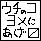
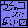

Pict
…星座の描き手…
気ままに描いた落書き置き場。
入れ替わりが激しいです。


←top menu→
*————＊————*
●→原型
◆→擬人化
■→ＴＯＰ絵
★→フリイラ
old↑←/→↓new
マリオ
● ● ◆ ◆ ★
■ ■ ■ ◆

（嫁に貰ってきました）
なんごくゴンナさん宅
→ノコレッド君
・・・——— ・・・
メテオス
◆ ■
ＷＩＳ用キャラ設定
テラ＝ディグニフィード
出張してきましたｖ
透水時雨さんより
１ ２
・・・——— ・・・
四勇者
■ ■ ■ ◆ ■

嫁に行ってきました
クリスケ＋α（なんごくゴンナさんから）
クリスケ（朝斗さんから）
・・・——— ・・・
その他
● ★new
・・・——— ・・・
キリ番リクエスト
*————＊————*
←top menu→